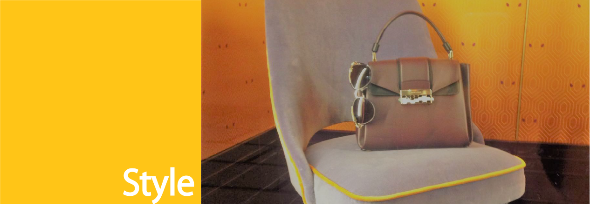
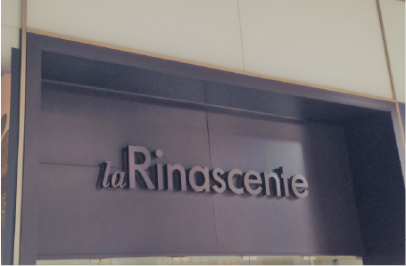
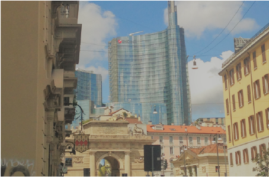
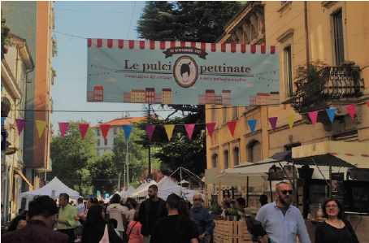

Shopping in Milan is fun. The city is an icon of style and there is always something for everyone.
Scroll the page for the list or click in the area you are interested in.

-

-
Duomo
La Rinascente
A cluster of high-end stores with Italian and international brands in fashion, accessories, beauty, homeware, design and food. Including Kartell and Alessi.
Moronigomma
For design objects.
Via La Spiga, Corso Napoleone and Galleria Vittorio Emanuele II
To windows watching and be inspired by the fashion.
-
-
Porta Venezia
Corso Buenos Aires
To buy clothes for all wallets.
Muji
Not exactely the most Italian brand, but their objects has become part of thw Milanese life.
Via Tadino
Where you could find the book or the comic strip that you always wanted.

-

-
Brera
Via Brera
Many little shops and alternative brands.
DMag
The outlet store of the D where you could find the clothes that you saw on pages of this fashion magazine.
Via Fiori chiari
Where you could find some of the finest Galleries where you could buy a piece of art
-
-
Porta Ticinese
Fiera di Senigallia
It has changed its initial location, but not the quality of this iconic flea market.
Mercato di Via Papiniano
Every Saturdays you could find in this street market the fashion collection of the past year for a bargain.
Corso di Porta Ticinese and Navigli
To shop from artisan and vintage shops.

-

-
Porta Nuova
High Tech
Selection of products: functionality, aesthetics and reasonable price.
10 Corso Como
"10 Corso Como is in constant evolution, every day a new card is added to the marvelous mosaic we call life” quote Carla Sozzani. Fashion, art exibitions, food at its top.
Isola district
Full of little artigianals and vintage shops.
-
-
Cadorna
Corso Vercelli
It looks like shopping in Milan in 1800.
Via Vincenzo Monti
To shop in a elegant part of the city.
